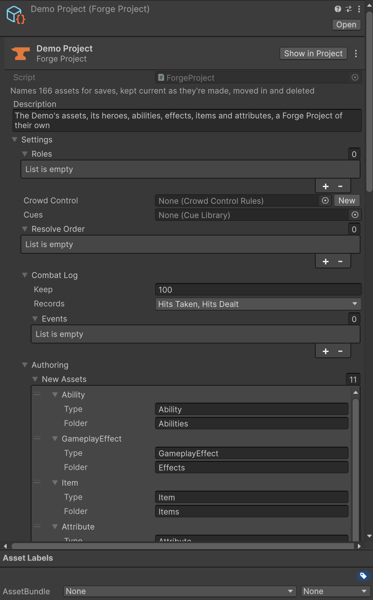

The project's inspector
The project's inspector (ForgeProjectEditor) shows the project's fields, and a line in place of its catalog's entries.

A Forge Project's inspector.
| Property | Description |
|---|---|
| Description | What the project is for. |
| Settings | The project's settings, which its game reads as it runs: its attributes' roles, and the crowd control rules an entity follows where it names none (Preferences and Project Settings). |
| Game Root Entity | The entity the game's GameRoot runs as. The project's GameRoot folder holds it. |
| Keep Catalog Current | Keeps the catalog current as assets are made, copied, moved and deleted. |
The catalog's line reads, for example, "Names 166 assets for saves, kept current as they're made, moved in and deleted".
The catalog
A project is the asset catalog its saves read (Saving and Loading: The Asset Catalog).
- Each PlayForge asset made, copied or moved into the project's folder is named in the catalog by its GUID, as it lands.
- A deleted file's entries go.
- An asset moved out stays named, so a save made before still finds it.
- A project also catches up on the assets it doesn't name yet as it's imported, and once each editor session.
With Keep Catalog Current off, the catalog is left as it is.